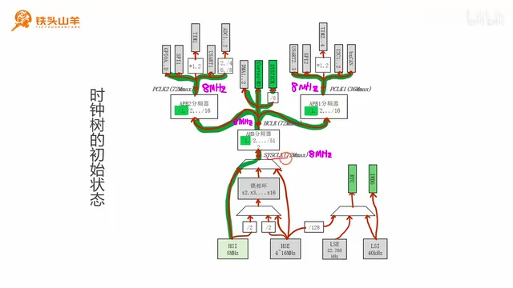
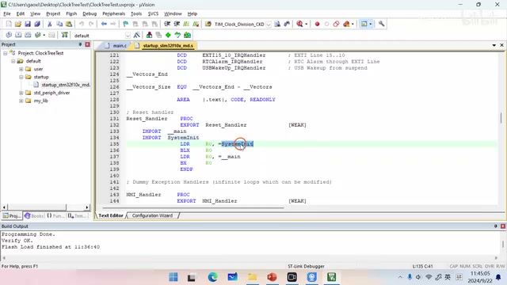
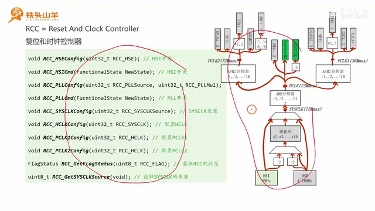
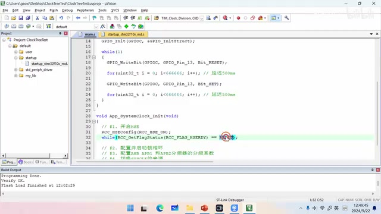
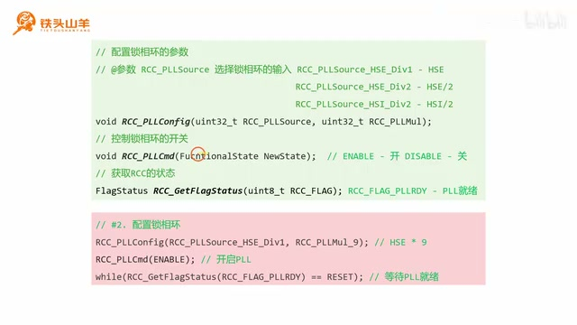
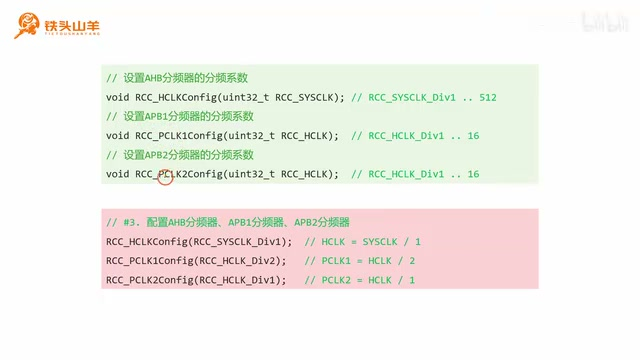
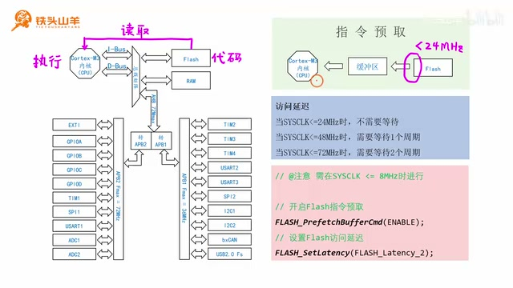
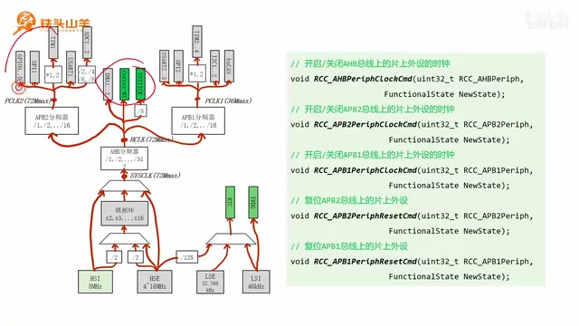

P039 · 8.2 （时钟）时钟树编程¶
大家好，我是铁头山羊。今天讲第八章第二节。上期视频讲解了时钟树的工作原理，这期来看怎样给时钟树编程。课程所需材料都在开发套件包里，大家可以扫描屏幕上的二维码进入淘宝店铺购买；购买套件后会获得课程课件和源码，也能加入答疑群直接和 UP 主交流。
本期分六部分：第一，单片机刚上电或按下复位按钮、还没有执行代码时，时钟树处于什么初始状态；第二，标准库的启动代码；第三，时钟树的编程接口；第四，编写代码配置时钟树；第五，Flash 指令预取；第六，片上外设的开关和复位。了解上电或复位后的初始状态，才能有针对性地编程。
时钟树的初始状态¶
所谓初始状态，就是单片机刚上电或刚按下复位按钮、尚未执行任何代码时的时钟树状态。先看系统时钟这一支：初始状态下，SYSCLK 来自 HSI。HSI 是芯片内部的高速时钟，频率固定为 8 MHz，所以 SYSCLK 也是 8 MHz。

The annotated clock tree shows the initial SYSCLK path from HSI and the 8 MHz state described here. · 原片 01:41
初始状态下，AHB、APB2、APB1 这三个分频器的系数都为 1。因此 HCLK = SYSCLK ÷ 1 = 8 MHz，PCLK2 和 PCLK1 也都是 HCLK ÷ 1 = 8 MHz。也就是说，初始时 SYSCLK、HCLK、PCLK2、PCLK1 都等于 8 MHz。
下面用小实验验证。图中的 Cortex-M3 是单片机内核，也就是 CPU；程序在内核中执行，内核从 HCLK 获取时钟。若 HCLK 为 8 MHz，内核频率也是 8 MHz，而内核频率决定代码执行速度。我们可以利用这一点自制延迟函数：写一个 LED 闪烁程序，点亮 LED、延迟 500 ms、熄灭 LED、再延迟 500 ms。这次不调用之前的 delay 函数，而用 for 循环做一个简陋的延迟。
先假设每次 for 循环消耗 10 个 CPU 周期，就可以估算一次循环所需的时间：先算一个 CPU 周期的时间，再乘以 10。
CPU 频率是 8 MHz，也就是 8 × 10⁶ Hz，所以一个 CPU 周期为 1 ÷ (8 × 10⁶) 秒，即 0.125 微秒。乘以 10 后，每次 for 循环约为 1.25 微秒。要延迟 500 ms，也就是 0.5 秒，就用 0.5 秒除以 1.25 微秒，得到循环 40 万次；循环这么多次就能得到约 500 ms 的延迟。
接下来编写代码。找到并解压模板工程压缩包到当前文件夹，把工程重新命名为 clock tree test，工程文件也重命名后双击打开。因为要用板载 LED，需要把 PC13 初始化为输出开漏模式。打开 main.c，代码不多，所以直接把初始化写在 main 方法中。首先开启 GPIOC 的时钟，然后声明 GPIO 初始化结构体变量，并开始配置 PC13。
把引脚编号设为 GPIO_Pin_13，模式设为 GPIO_Mode_Out_OD，最大输出速度选 2 MHz，然后调用 GPIO_Init 初始化 PC13。初始化后写闪灯代码：先点亮 LED，写 0 就是点亮；接着用 for 循环延迟 500 ms。刚才算出的次数是 40 万，也就是 4 后面跟五个零，注意不要数错。之后熄灭 LED，再延迟 500 ms，代码就写完了。
编译代码，按下载按钮把它下载到单片机，再按复位按钮。板载 LED 开始闪烁，但速度看起来不对：亮 500 ms、灭 500 ms，合起来应该一秒一次，实际却明显快于 1 Hz。带着这个疑问，来看第二部分：标准库启动代码。
标准库的启动代码¶
在工程目录中打开 startup 文件夹，里面有一个 .s 文件，它就是单片机的启动文件。打开后会看到很多汇编代码，暂时可能看不懂。往下找到中断向量表，之前学过的中断响应函数名称就在这张表里查找。向量表下面有 Reset_Handler；单片机从这里开始执行。Reset_Handler 先执行 SystemInit，完成后才执行用户编写的 main 方法。

The startup assembly listing highlights Reset_Handler, SystemInit, and the jump to main. · 原片 08:46
再梳理一次：刚启动时先执行启动文件中的 Reset_Handler，其中先调用 SystemInit，再调用 main。所以即使我们一行代码也没写，SystemInit 已经替用户初始化了单片机。它主要帮助配置时钟树，使时钟达到最高频率 72 MHz，让芯片发挥最佳性能。
初始状态图中四个节点的频率都是 8 MHz，这没有错；不过在执行 main 之前，SystemInit 已经把时钟树改成了另一种状态。
SystemInit 把时钟树配置成右图所示的状态，让相关节点达到各自的最高频率。它从 HSE 产生时钟并送入锁相环，经过 9 倍频后，SYSCLK 达到 72 MHz。几个分频器的系数为 1、1、2，因此 HCLK、PCLK2、PCLK1 分别是 72 MHz、72 MHz、36 MHz。Cortex-M3 内核从 HCLK 获取时钟，频率由初始的 8 MHz 变为 72 MHz，前面看到闪灯明显加快正是因为如此。
现在小改实验代码：在 Reset_Handler 里不执行 SystemInit，而直接执行 main。把上面两行代码注释掉即可。汇编语言的注释和 C 语言不同，要写英文分号，中文分号会报错。注释这两行后，单片机复位时就直接执行 main，不再由 SystemInit 配置时钟树。重新编译、下载并按复位按钮，灯闪得比刚才慢了，但仍稍快于每秒一次。
原因是此前假设每次 for 循环消耗 10 个 CPU 周期只是大约的数，真实消耗周期并不确定。在当前时钟树配置下，每次循环大约消耗 6 个周期。
所以要把循环次数从 40 万改成 66 万 6666（约 66.7 万），才能得到严格的 500 ms 延迟。两处循环次数都要修改。编译、下载后按复位按钮，LED 现在正好一秒闪一次。
时钟树的编程接口¶
接着简单了解时钟树的编程接口，为第四部分配置时钟树做准备。左侧列出的时钟树接口和右侧时钟树上的各个环节一一对应，可以用它们配置每个环节。接口一共有十个，数量不少，但因为能在图中找到对应位置，理解起来比较容易；使用方法也简单，而且以后很少需要自己编写时钟树配置代码。学习目标是知道这些代码的作用、能读懂它们，不要求真正掌握写法。
每个接口都以 RCC_ 开头。RCC 是芯片内部的 Reset and Clock Control（复位和时钟控制器）模块，负责芯片复位控制和时钟树控制。之后看到 RCC，可以把它联系到芯片内部的时钟树。
逐个看接口。第一个是 RCC_HSEConfig：HSE 中 HS 是 high speed（高速），E 是 external（外部），指单片机的高速外部时钟；Config 是配置。这个接口用于配置 HSE，实际上就是 HSE 的开关。
图中有些模块是白底，有些带颜色。带颜色表示可以开关；灰底表示当前关闭，绿底表示当前开启。HSE 是有颜色的，说明可以开关，而且目前关闭，因此可以用这个接口开启外部高速时钟。
第二个接口是 RCC_HSICmd。HS 仍表示高速，I 表示 internal（内部），所以 HSI 是高速内部时钟。Cmd 表示开关，这个接口控制 HSI 的开关；参数填 ENABLE 就开启 HSI，填 DISABLE 就关闭 HSI。图上 HSI 也带颜色，且当前开启。

The slide pairs the RCC API list with the clock-tree blocks they configure. · 原片 13:37
第三个接口是 RCC_PLLConfig。PLL 是 phase lock loop（锁相环）的缩写，Config 表示配置，因此这个接口用来配置锁相环。需要设置两个参数：锁相环输入信号来自图中哪条箭头，以及倍频系数是多少，比如 2、3、4、5、6 倍频或 16 倍频。
第四个接口是 RCC_PLLCmd。PL 表示锁相环，Cmd 是开关，因此这个接口控制 PLL 开关。图中的 PLL 模块可开关，当前关闭，可以通过此接口开启。
第五个接口是 RCC_SYSCLKConfig。SYSCLK 是 system clock（系统时钟），指图中的系统时钟。该接口用于配置系统时钟来源。
RCC_SYSCLKConfig 用来在 SYSCLK 的三个来源中选择一个。接下来的三个接口分别是 RCC_HCLKConfig、RCC_PCLK1Config 和 RCC_PCLK2Config，对应图中的 HCLK、PCLK1、PCLK2，用来设置 AHB、APB1、APB2 分频器的分频系数，例如 1 分频、2 分频、4 分频、6 分频或 8 分频等。
最后两个接口中，倒数第二个 RCC_GetFlagStatus 用来读取 RCC 标志位，也就是查询 RCC 当前状态。例如调用 RCC_HSEConfig 开启 HSE 后，启动需要一定时间；可以通过查询标志位，看 HSE 是否准备好。
最后一个 RCC_GetSYSCLKSource 用来读取 SYSCLK 当前来源。SYSCLK 有三个来源。调用 RCC_SYSCLKConfig 切换来源（例如切换到 PLL）也要花时间，因此可以用 RCC_GetSYSCLKSource 查询是否已经切换完成。
配置时钟树¶
第三部分过了一遍时钟树相关接口，下面用它们编程。回忆一下，我们已在启动文件中注释掉 SystemInit，所以程序会直接执行 main，不再由 SystemInit 配置时钟树。main 开始执行时，SYSCLK 来自 HSI，SYSCLK、HCLK、PCLK2、PCLK1 都是 8 MHz。
现在要通过代码把左侧的树变成右侧的状态：从更精确的 HSE 获取时钟，经过 PLL 倍频，让 SYSCLK 达到最高的 72 MHz；HCLK、PCLK2、PCLK1 也达到各自的目标频率。
程序分四步。第一步，因为 PLL 输入要用 HSE，先开启 HSE。第二步配置 PLL 参数：输入选 HSE，倍频选 9 倍，然后启动 PLL。第三步配置上面的三个分频器：目标系数分别为 1、1、2。第四步选择 SYSCLK 来源，把原先的 HSI 切换为 PLL。四步的顺序很重要，可以自己思考为什么要这样安排。
为使代码更工整，专门用一个名为 SystemClock_Init 的函数封装系统时钟初始化：先写函数原型，再在 main 下方实现。按上述四步编写，首先启动 HSE。这里要用两个接口。RCC_HSEConfig 控制 HSE 开关，参数 RCC_HSE_ON 表示开启，RCC_HSE_OFF 表示关闭；因此这里调用它并传入开启参数。
第二个要用的接口是查询 HSE 标志位，确认 HSE 是否准备好。细节稍后继续，当前先按四步落实：开启 HSE；配置并启动 PLL；配置 AHB、APB1、APB2 分频器；最后切换 SYSCLK 来源。
先回到代码，为使代码整齐，把系统时钟初始化封装在 SystemClock_Init 函数中，声明函数原型并在 main 下方实现。第一步使用 RCC_HSEConfig 设置 HSE。参数传入 RCC_HSE_ON 表示开启，RCC_HSE_OFF 表示关闭。
开启 HSE 要等待一段时间，因此用 while 循环反复查询 RCC 状态里的 HSE ready 标志。HSE ready 表示 HSE 已就绪；等标志就绪，循环退出，HSE 就开启了。代码先调用 RCC_HSEConfig(RCC_HSE_ON) 打开 HSE，再用 RCC_GetFlagStatus(RCC_FLAG_HSERDY) 查询。返回 RESET 表示尚未就绪，变成 SET 时循环退出。

The code waits on the HSE ready flag after enabling HSE. · 原片 25:10
第二步配置 PLL 参数并启动 PLL。按图中目标，PLL 从 HSE 获取时钟，倍频系数选 9。配置接口 RCC_PLLConfig 有两个参数：第一个选择 PLL 输入，第二个选择倍频系数。输入选项包括 HSE、HSE/2 和 HSI/2，本次选择 HSE。第二个参数名中的 MUL 是 multiply 的缩写，表示倍频，可选 2 到 16 倍，本次选 9 倍。
代码调用 RCC_PLLConfig，第一个参数选择 HSE，第二个参数填 RCC_PLLMUL_9，表示 9 倍频。接着用第二个接口 RCC_PLLCmd 控制 PLL 开关。PLL 默认关闭，现在要打开，参数填 ENABLE。PLL 启动也需要时间，所以用刚才的 RCC_GetFlagStatus 查询 PLL ready 标志；while 循环不断查询，等 PLL 就绪后退出，表示 PLL 已经开启。

The PLL configuration example selects HSE and a multiplication factor of nine, then enables PLL. · 原片 26:30
第三步配置三个分频器，目标系数是 AHB 为 1、APB1 为 2、APB2 为 1。分别使用 RCC_HCLKConfig、RCC_PCLK1Config、RCC_PCLK2Config：HCLK = SYSCLK ÷ 1，PCLK1 = HCLK ÷ 2，PCLK2 = HCLK ÷ 1。这样三个分频器就配置好了。
第四步切换系统时钟来源：原来 SYSCLK 来自 HSI，现在要切换到 PLL。先用 RCC_SYSCLKConfig 选择 PLL。切换需要时间，所以还要用另一个接口查询当前 SYSCLK 来源。

The clock divider calls set HCLK to SYSCLK divided by one, PCLK1 to HCLK divided by two, and PCLK2 to HCLK divided by one. · 原片 28:42
查询 SYSCLK 来源的接口会返回一个值：0 表示 HSI，4 表示 HSE，8 表示 PLL。用 while 循环等待返回值变成 8，就说明 SYSCLK 已经从 HSI 切换到 PLL，系统时钟配置完成。
Flash 指令预取与访问延迟¶
配置时钟树后还要配置 Flash 的指令预取。看单片机内部结构图，Flash 用来存储程序，用户写的代码就放在 Flash 中。运行时 Cortex-M3 内核逐条从 Flash 读取代码并执行，但 Flash 的读取速度远赶不上内核执行速度，运行时会拖慢内核。
解决方法是在内核和 Flash 之间加一个缓冲区：内核处理其他事情时，Flash 提前把下一条要执行的指令放进缓冲区，内核需要指令时直接从缓冲区读取，从而加快读取速度。这种机制叫指令预取。为了提高代码执行速度，需要手动开启指令预取。原本 SystemInit 已经开启了它，但我们注释掉了 SystemInit，所以现在要自己开启。

The diagram places a prefetch buffer between the Cortex-M3 and Flash, with the enable call and two-cycle latency setting. · 原片 32:40
用 FLASH_PrefetchBufferCmd 控制 Flash 指令预取缓冲区开关，参数传 ENABLE 表示开启。注意，调用这个接口时 SYSCLK 必须小于等于 8 MHz。SystemClock_Init 开始配置之前，时钟还处于初始状态，SYSCLK 正好是 8 MHz，所以最好把开启指令预取的代码放在 SystemClock_Init 函数开头。
除了指令预取，还要配置 Flash 访问延迟，因为 Flash 速度较慢，接口操作速度不能大于 24 MHz。SYSCLK 小于等于 24 MHz 时 Flash 跟得上，不需要等待；24 MHz < SYSCLK <= 48 MHz 时需要等待一个周期；48 MHz < SYSCLK <= 72 MHz 时需要等待两个周期。本次把 SYSCLK 配置成 72 MHz，因此 Flash 需要等待两个周期。
调用 FLASH_SetLatency 把 Flash 访问延迟设为两个周期。把这句和开启预取的代码写在初始化函数开头，再把 SystemClock_Init 放在 main 方法最前面调用。编译、下载后按单片机复位按钮，可以看到 LED 闪烁明显加快，这说明时钟树配置成功，实验到这里完成。
片上外设时钟开关与复位¶
最后看怎样通过时钟树开关和复位片上外设。时钟树上有很多叶子，这些叶子就是单片机的片上外设。可以通过时钟树开启或关闭这些外设的时钟。

The slide maps peripheral clock and reset calls to AHB, APB1, and APB2 buses. · 原片 35:45
例如，使用 RCC_AHBPeriphClockCmd 开关 AHB 总线上外设的时钟；使用 RCC_APB2PeriphClockCmd 开关 APB2 总线上外设的时钟；使用 RCC_APB1PeriphClockCmd 开关 APB1 总线上外设的时钟。
例如，要开启 GPIOA 时钟，先看出 GPIOA 位于 APB2 总线上，因此调用 RCC_APB2PeriphClockCmd 并选择 RCC_APB2Periph_GPIOA，参数传 ENABLE。要开启 USART2 时钟，它在 APB1 总线上，因此调用 RCC_APB1PeriphClockCmd 并选择 RCC_APB1Periph_USART2，同样传 ENABLE。之前开启 GPIOC 时钟也使用 APB2 的接口，因为 GPIOC 位于 APB2 总线上。若要开启 DMA1 或 DMA2 时钟，它们位于中间的 AHB 总线上，调用 RCC_AHBPeriphClockCmd，选择相应的 DMA 外设并传 ENABLE。
除了开关外设时钟，还可以复位片上外设。复位 APB2 总线上的外设，调用 RCC_APB2PeriphResetCmd；复位 APB1 总线上的外设，则调用 RCC_APB1PeriphResetCmd。
例如复位 I2C1：它位于 APB1 总线上，所以调用 RCC_APB1PeriphResetCmd 并选择 RCC_APB1Periph_I2C1。先传 ENABLE 施加复位信号，相当于按下复位按钮；再调用一次并传 DISABLE 释放复位信号，相当于松开按钮，之后 I2C1 模块就被复位了。
本期内容到这里结束。我们学习了时钟树配置方法和 Flash 配置方法。感谢大家收看，我是铁头山羊，我们下期视频再见。